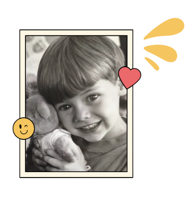
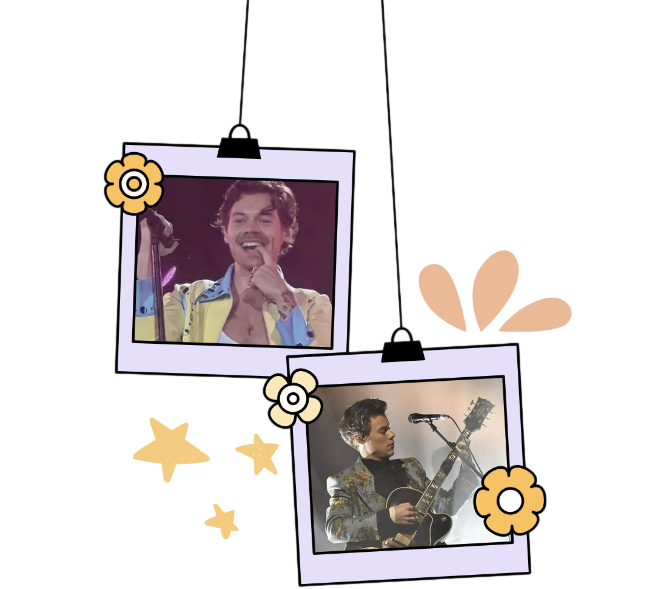
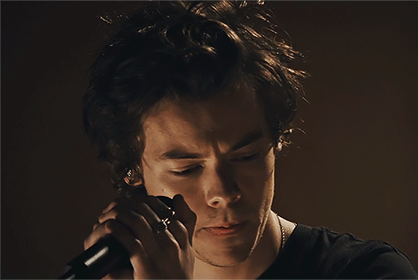

Harry Edward Styles nació el 1 de febrero de 1994 en Redmond, un pequeño pueblo cerca de Manchester, Inglaterra. Creció escuchando a Fleetwood Mac, Queen y The Beatles, discos que su madre ponía en casa y que años después reconocería como la base de su propio sonido. Antes de la fama cantaba en una banda escolar llamada White Eskimo y trabajaba los fines de semana en una panadería del pueblo.
En 2010 se presentó como solista en el programa británico The X Factor. Aunque no avanzó como solista, los productores lo agruparon junto a otros cuatro concursantes para formar One Direction, la boyband que terminaría siendo uno de los fenómenos pop más grandes de la década, con cinco álbumes de estudio y giras que llenaron estadios en todo el mundo.

🚀 El salto en solitario
Cuando One Direction anunció su pausa indefinida en 2016, Harry decidió tomarse su tiempo antes de volver a la música. Se mudó a Jamaica para escribir y grabar, alejado del ruido mediático, y regresó en 2017 con un álbum homónimo de raíz rockera que sorprendió a la crítica por su madurez: baladas de piano, guitarras eléctricas y una voz mucho más grave y confiada que la que se conocía de su etapa en la banda.
Ese primer paso fue solo el comienzo. Con cada disco, Harry fue construyendo una imagen pública propia: trajes de alta costura sin distinción de género, uñas pintadas, boas de plumas y una actitud desenfadada frente a las etiquetas, convirtiéndose en un referente de estilo tanto como de música.
🏷️ Etiquetas:
Glam pop
Soft rock
Estética andrógina
Directos en vivo

🏆 Consagración
Cada álbum de Harry funciona como un capítulo cerrado en sí mismo. La introspección y el rock clásico de su debut dieron paso a Fine Line (2019), un disco luminoso y colorido cargado de funk y pop psicodélico que lo llevó a los primeros puestos de las listas globales con temas como "Watermelon Sugar" y "Adore You".
En 2022 llegó Harry's House, un trabajo más íntimo y hogareño, influenciado por el synth-pop de los 80 y el soft rock. El disco fue reconocido con el Grammy al Álbum del Año en la ceremonia de 2023, consolidando a Harry como uno de los artistas más completos de su generación, capaz de moverse entre géneros sin perder una voz propia y reconocible.
🕒 Su cronología
Año
Evento
2010
Comienzos en The X Factor Se presenta como solista en el programa británico y termina formando parte de One Direction, con quienes edita cinco álbumes de estudio.
2016
Primer paso en solitario Anuncia su carrera como solista y firma contrato discográfico propio tras el parón de la banda.
2017
Álbum debut: Harry Styles Publica su primer disco de estudio, de raíz rockera y baladas introspectivas, encabezado por el sencillo "Sign of the Times".
2019
Fine Line Lanza su segundo álbum, más colorido y experimental, con himnos como "Watermelon Sugar" y "Adore You".
2022
Harry's House Publica su tercer álbum, íntimo y hogareño, que se lleva el Grammy al Álbum del Año en la ceremonia de 2023.
🎸 Su sonido

Influenciado por Fleetwood Mac, David Bowie y The Rolling Stones, Harry combina guitarras cálidas, arreglos de banda en vivo y letras confesionales con una sensibilidad pop contemporánea. Su directo es tan celebrado como sus discos, con puestas en escena coloridas y una conexión cercana con el público.
🎼 Géneros:
Pop rock
Glam pop
Soft rock
Synth-pop
Folk pop
🎧 Ahora sonando
Elige un álbum en la sección de discografía y dale play a su reproductor para escuchar un adelanto.
💌 Sobre este sitio
Fansite hecho a mano y con ayuda de nuestro amix Claude con HTML5 y atributos de este mismo como bgcolor para su decoración, dedicado a Harry Styles y a su música.
🎤 HarryTeAmo!
Realicé esta página porque hace poco fue su concierto en México y no pude ir. Así que, como buen fan, decidí crearla para compartir mi amor por este increíble artista.